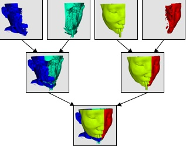
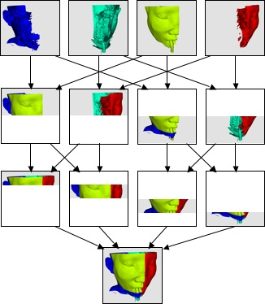

Parallel Rendering
X Forwarding - Not a good idea
Parallel Rendering implies that many processors have some context to render their pixels into. Even though X11 forwarding might be available, you should not run the client remotely and forward its X calls. ParaView will be far more efficient if you let ParaView directly handle the data transfer between local and remote machines. When doing hardware accelerated rendering in GPUs this implies having X11 or Windows display contexts (either offscreen of onscreen). Otherwise this implies using offscreen Mesa (OSMesa) linked in to ParaView to do the rendering entirely offscreen into software buffers.
Onscreen GPU Accelerated rendering via X11 Connections
One of the most common problems people have with setting up the ParaView server is allowing the server processes to open windows on the graphics card on each process's node. When ParaView needs to do parallel rendering, each process will create a window that it will use to render. This window is necessary because you need the X window before you can create an OpenGL context on the graphics hardware.
There is a way around this. If you are using the Mesa as your OpenGL implementation, then you can also use the supplemental OSMesa library to create an OpenGL context without an X window. However, Mesa is strictly a CPU rendering library so, use the OSMesa solution if and only if your server hardware does not have rendering hardware. If your cluster does not have graphics hardware, then compile ParaView with OSMesa support and use the --use-offscreen-rendering flag when launching the server.
Assuming that your cluster does have graphics hardware, you will need to establish the following three things.
Have xdm run on each cluster node at startup. Although xdm is almost always run at startup on workstation installations, it is not as commonplace to be run on cluster nodes. Talk to your system administrators for help in setting this up.
Disable all security on the X server. That is, allow any process to open a window on the x server without having to log in. Again, talk to your system administrators for help.
Use the -display flag for pvserver to make sure that each process is connecting to the display localhost:0 (or just :0).
To enable the last condition, you would run something like
mpirun -np 4 ./pvserver -display localhost:0
An easy way to test your setup is to use the glxgears program. Unlike pvserver, it will quickly tell you (or, rather, fail to start) if it cannot connect to the local X server.
mpirun -np 4 /usr/X11R6/bin/glxgears -display localhost:0
Offscreen software rendering via OSMesa
When running ParaView in a parallel mode, it may be helpful for the remote rendering processes to do their rendering in offscreen buffers. For example, other windows may be displayed on the node(s) where you are rendering; if these windows cover part of the rendering window, depending on the platform and graphics capabilities they might even be captured as part of the display results from that node. A similar situation could occur if more than one rendering process is assigned to a single machine, and the processes share a display. Also, in some cases the remote rendering nodes are not directly connected to a display and otherwise if your cluster does not have graphics hardware, then compile ParaView with OSMesa support and use the --use-offscreen-rendering flag when launching the server.
The first step to compiling OSMesa support is to make sure that you are compiling with the Mesa 3D Graphics Library. It is difficult to tell an installation of Mesa from any other OpenGL implementation (although the existence of an osmesa.h header and a libOSMesa library is a good clue). If you are not sure, you can always download your own copy from http://mesa3d.org. We recommend using either Mesa version 7.6.1 or 7.9.1.
There are three different ways to use Mesa as ParaView's openGL library:
You can use it purely as a substitute for GPU enabled onscreen rendering. To do this, set the CMake variable OPENGL_INCLUDE_DIR to point to the Mesa include directory (the one containing the GL subdirectory), and set the OPENGL_gl_LIBRARY and OPENGL_glu_LIBRARY to the libGL and libGLU library files, respectively.
|
Variable |
Value |
Description |
|
PARAVIEW_BUILD_QT_GUI |
ON |
|
|
VTK_USE_COCOA |
ON |
Mac Only. X11 is not supported. |
|
VTK_OPENGL_HAS_OSMESA |
OFF |
Disable off screen rendering. |
|
OPENGL_INCLUDE_DIR |
<mesa include dir> |
Set this to the include directory in MESA. |
|
OPENGL_gl_LIBRARY |
libGL |
Set this to the libGL.a or libGL.so file in MESA. |
|
OPENGL_glu_LIBRARY |
libGLU |
Set this to the libGLU.a or libGLU.so file in MESA. |
You can use it as a supplement to onscreen rendering. This mode requires that you have a display (X11 is running). In addition to specifying the GL library (which may be a GPU implementation of the Mesa one above), you must tell ParaView where Mesa's OSMesa library is. Do that by turning the VTK_OPENGL_HAS_OSMESA variable to ON. After you configure again you will see a new CMake variable called OSMESA_LIBRARY. Set this to the libOSMesa library file.
Variable
Value
Description
PARAVIEW_BUILD_QT_GUI
ON
VTK_USE_COCOA
ON
Mac Only. X11 is not supported.
VTK_OPENGL_HAS_OSMESA
ON
Turn this to ON to enable software rendering.
OSMESA_INCLUDE_DIR
<mesa include dir>
Set this to the include directory for MESA.
OPENGL_INCLUDE_DIR
<mesa include dir>
Set this to the include directory for MESA.
OPENGL_gl_LIBRARY
libGL
Set this to the libGL.a or libGL.so file.
OPENGL_glu_LIBRARY
libGLU
Set this to the libGLU.a or libGLU.so file.
OSMESA_LIBRARY
libOSMesa
Set this to the libOSMesa.a or libOSMesa.so file.
You can use it for pure offscreen rendering, which is necessary when there is no display. To do this, make sure that the OPENGL_gl_LIBRARY variable is empty and that VTK_USE_X is off. Specify the location of OSMesa and OPENGL_glu_LIBRARY as above and turn on the VTK_USE_OFFSCREEN variable.
|
Variable |
Value |
Description |
|
PARAVIEW_BUILD_QT_GUI |
OFF |
When using offscreen rendering there is no gui |
|
VTK_USE_COCOA |
OFF |
Mac only. |
|
VTK_OPENGL_HAS_OSMESA |
ON |
Turn this to ON to enable Off Screen MESA. |
|
OSMESA_INCLUDE_DIR |
<mesa include dir> |
Set this to the include directory for MESA. |
|
OPENGL_INCLUDE_DIR |
<mesa include dir> |
Set this to the include directory for MESA. |
|
OPENGL_gl_LIBRARY |
<empty> |
Set this to empty. |
|
OPENGL_glu_LIBRARY |
libGLU |
Set this to the libGLU.a or libGLU.so file. |
|
OSMESA_LIBRARY |
libOSMesa |
Set this to the libOSMesa.a or libOSMesa.so file. |
Once again, once you build with OSMesa support, it will not take effect unless you launch the server with the --use-offscreen-rendering flag or alternatively, set the PV_OFFSCREEN environment variable on the server to 1.
Compositing
Given that you are connected to a server which is capable of rendering, you have a choice of whether to do the rendering remotely or to do it locally. ParaView’s server performs all data-processing tasks. This includes generation of a polygonal representation of the full data set and of decimated LOD models. Once the data is generated on the server, it is sometimes better to do the rendering remotely and ship pixels to the client for display, and sometimes better to instead shift geometry to the client and have the client render it locally.
In many cases, the polygonal representation of the data set is much smaller than the original data set. (In an extreme case, a simple outline may be used to represent a very large structured mesh.) In these cases, it may be better to transmit the polygonal representation from the server to the client, and then let the client render it. The client can render the data repeatedly, when the viewpoint is changed for instance, without causing additional network traffic. Only when the data changes will network traffic occur. If the client workstation has high-performance rendering hardware, it can sometimes render even large data sets interactively in this way.
The second option is to have each node of the server render its geometry and send the resulting images to the client for display. There is a penalty per rendered frame for compositing images and sending the image across the network. However, ParaView’s image compositing and delivery is very fast, and there are many options to ensure interactive rendering in this mode. Therefore, although small models may be collected and rendered on the client interactively, ParaView’s distributed rendering can render models of all sizes interactively.
ParaView automatically chooses a rendering strategy to achieve the best rendering performance. You can control the rendering strategy explicitly, forcing rendering to occur entirely on the server or entirely on the client for example, by choosing Settings… from the Edit menu of ParaView. Double click on Render View from the window on the left-hand side of the Settings dialog, and then click on Server. The rendering strategy parameters shown in Figure 10 will now be visible. Here we explain in detail the most important of these controls. For an explanation of all controls, see the Appendix.

Figure 10. Parallel rendering parameters
Remote Render Threshold: This slider determines how large the data set must be in order for parallel rendering with image compositing and delivery to be used (as opposed to collecting the geometry to the client). The value of this slider is measured in megabytes. Only when the entire data set consumes more memory than this value will compositing of images occur. If the check box beside the Remote Render Threshold slider is unmarked, then compositing will not happen; the geometry will always be collected. This is only a reasonable option when you can be sure the data set you are using is very small. In general, it is safer to move the slider to the right than to uncheck the box.
ParaView uses IceT to perform image compositing. IceT is a parallel rendering library that takes multiple images rendered from different portions of the geometry and combines them into a single image. IceT employs several image-compositing algorithms, all of which are designed to work well on distributed memory machines. Examples of two such image-compositing algorithms are depicted in Figure 11 and Figure 12. IceT will automatically choose a compositing algorithm based on the current workload and available computing resources.

Figure 11. Tree compositing on four processes.

Figure 12. Binary swap on four processes.
Interactive Subsample Rate: The time it takes to composite and deliver images is directly proportional to the size of the images. The overhead of parallel rendering can be reduced by simply reducing the size of the images. ParaView has the ability to subsample images before they are composited and inflate them after they have been composited. The Interactive Subsample Rate slider specifies the amount by which images are subsampled. This is measured in pixels, and the subsampling is the same in both the horizontal and vertical directions. Thus a subsample rate of 2 will result in an image that is ¼ the size of the original image. The image is scaled to full size before it is displayed on the user interface, so the higher the subsample rate, the more obviously pixilated the image will be during interaction as demonstrated in Figure 13. When the user is not interacting with the data, no subsampling will be used. If you want subsampling to always be off, unmark the check box beside the Interactive Subsample Rate slider.
|
[[File:ParaView_UsersGuide_NoSubsampling.jpg
|
link=]] |
[[File:ParaView_UsersGuide_TwoPixelSubsampling.jpg
|
link=]] |
[[File:ParaView_UsersGuide_EightPixelSubsampling.jpg
|
link=]]
|
|
No Subsampling |
Subsample Rate: 2 pixels |
Subsample Rate: 8 pixels
|
|
||
Figure 13. The effect of subsampling on image quality
Squirt Compression: When ParaView is run in client/server mode, ParaView uses image compression to optimize the image transfer. The compression uses an encoding algorithm optimized for images called SQUIRT (developed at Sandia National Laboratories).
SQUIRT uses simple run-length encoding for its compression. A run-length image encoder will find sequences of pixels that are all the same color and encode them as a single run length (the count of pixels repeated) and the color value. ParaView represents colors as 24-bit values, but SQUIRT will optionally apply a bit mask to the colors before comparing them. Although information is lost when this mask is applied, the sizes of the run lengths are increased, and the compression gets better. The bit masks used by SQUIRT are carefully chosen to match the color sensitivity of the human visual system. A 19-bit mask employed by SQUIRT greatly improves compression with little or no noticeable image artifacts. Reducing the number of bits further can improve compression even more, but it can lead to more noticeable color-banding artifacts.
The Squirt Compression slider determines the bit mask used during interactive rendering (i.e., rendering that occurs while the user is changing the camera position or otherwise interacting with the data). During still rendering (when the user is not interacting with the data), lossless compression is always used. The check box to the left of the Squirt Compression slider toggles whether the SQUIRT compression algorithm is used at all.